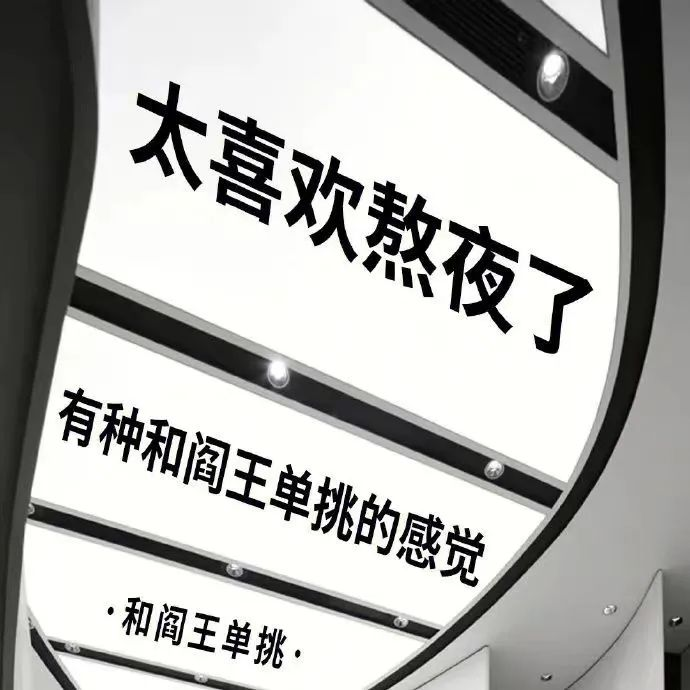

雨天，从土里拔出一只红薯。凿开来，置诸杨氏模量大的器皿中，可劲儿捣。长直链淀粉被打爆成支链淀粉，支链热糊化变得黏吧黏吧。放一会儿，它冷了，保水越来越弱，一切都显得了无生趣。昨天去换手机电池。一加九的手机，从我拿到的那天起就明显觉得整体运行体验比之前用的华为P20 pro好多了，但是电池可能只有原来的60%那么经得起用。第三方测试软件测不了双电芯，拿到OPPO售后去也测不出电池健康度。反正这手机两年质保，那就开始换。换完之后，小哥说我的膜贴的不正，确实是我自己贴的。于是另帮我切割之后贴了张膜。的确手法好。在我现在的理解里，图像，是不错的嘴替。比如Ig就是一个不错的平台。有一些我认识的人，也能看到不认识的人。缺点是没有长文，而且Reels很浮躁。最重要的问题是每句话都得配图和视频，没办法写句话。推没有我认识的人，我最多去看看新闻。这条的背景是我把pyq锁到了只剩公众号的推文。如所见，公众号也没有更新得多频繁，远不如大二那会儿我自己一个人的键盘可以给三个公众号打成日更。
凌晨五点多，老朋友给我消息。又是一些奋不顾身的事情咯，能我来帮帮忙也是不错。他们去做他们的事情了，我说good luck吃饭叫我。人类生活还蛮奇怪的，after all我也弄不懂。能量逃逸，我围着无聊跑，都快到了第一宇宙速度。口袋里的越南绿豆糕一不小心掉了出来，在钢刀上一下子稀散了一地。